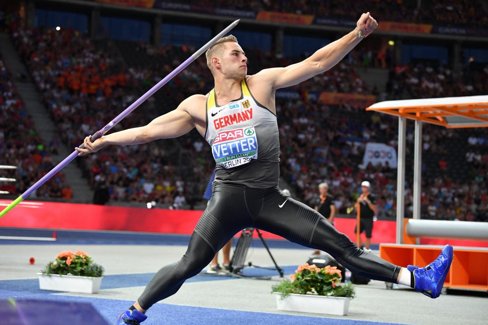

Triathlon : Cassandre Beaugrand s'offre la médaille d'orJudo : L’équipe de France de judo medaille d’or après avoir était mené 3-1
Les sites
Château de Versaille
Le site du Château de Versailles sera l’un des lieux prestigieux accueillant des
épreuves des Jeux Olympiques et
Paralympiques de Paris 2024. Les événements auront lieu dans le parc du château, avec des
compétitions équestres
(concours complet, dressage et saut d’obstacles) prévues du 27 juillet au 6 août 2024. Les
épreuves de pentathlon
moderne se tiendront du 8 au 11 août, et les compétitions de para-équestre seront organisées du
3 au 7 septembre 2024.
Pont Alexendre III
Le Parc des Princes, célèbre stade parisien, sera un site emblématique des Jeux
Olympiques 2024. Il accueillera
plusieurs matchs de football, y compris les finales masculine et féminine. Avec une capacité de
47 929 places, il offre
une acoustique de qualité, appréciée aussi bien lors des événements sportifs que des grands
concerts. Ce stade, rénové
pour l'Euro 2016, a vu des améliorations notables, comme une pelouse moderne et des zones
d'accueil repensées pour le
public et les joueurs.
Pont Alexendre III
Lors des JO, le Pont Alexandre III accueillera la ligne d’arrivée des épreuves de
contre-la-montre cycliste, ainsi que
des épreuves de triathlon et de marathon de natation (10 km). Des gradins temporaires seront
installés pour les
spectateurs et démontés après les Jeux, en respectant le patrimoine urbain. Ce site est situé à
proximité d’autres lieux
olympiques comme le Grand Palais et la Place de la Concorde, consolidant le concept des JO dans
le cœur historique de
Paris.
Stade Tour Eiffel
La Tour Eiffel et le Champ-de-Mars seront des sites emblématiques des Jeux Olympiques de
Paris 2024. Un stade
temporaire, appelé le Stadium Tour Eiffel, sera érigé sur le Champ-de-Mars, juste en face de la
Tour Eiffel. Ce lieu
spectaculaire accueillera les compétitions de volleyball de plage du 27 juillet au 10 août, avec
une capacité de 12 000
spectateurs. Il sera ensuite transformé pour le cécifoot pendant les Jeux Paralympiques.
Invaldes
Les Invalides, un site emblématique de Paris, sera un lieu clé pour les Jeux Olympiques
et Paralympiques de 2024. Plus
précisément, l’Esplanade des Invalides accueillera les épreuves de tir à l’arc et de para tir à
l’arc. Ce vaste espace
vert, situé dans le 7ᵉ arrondissement, offre un cadre spectaculaire avec une vue sur le célèbre
Hôtel des Invalides, qui
abrite notamment le tombeau de Napoléon et des musées militaires français.
Teahupo'o, Tahiti
Teahupo’o, situé sur l’île de Tahiti, sera le site officiel des compétitions de surf des
Jeux Olympiques de Paris 2024.
Ce choix met en valeur les vagues mythiques de ce spot, réputé parmi les plus puissants et
dangereux au monde, attirant
depuis longtemps les meilleurs surfeurs internationaux. Teahupo’o a été sélectionné pour son
cadre unique et sa
signification culturelle, étant considéré comme un lieu sacré dans le monde du surf. Ce sera
également la première fois
qu’une épreuve des Jeux Olympiques se déroulera en Polynésie française, à 15 000 km de Paris.
Voir plus
Les sports
Escrime
Course
Natation
Sport collectif
Sport de raquette
Sport de combat
Cyclisme sur piste

Multisport
Sport de glisse
Tirs sportif
Saut
Jeux paralympiques
Les Jeux Paralympiques de Paris 2024 se tiendront du 28 août au 8 septembre 2024, immédiatement
après les Jeux
Olympiques. Cet événement marquera la 17ᵉ édition des Jeux Paralympiques et promet d’être historique à
plusieurs égards.